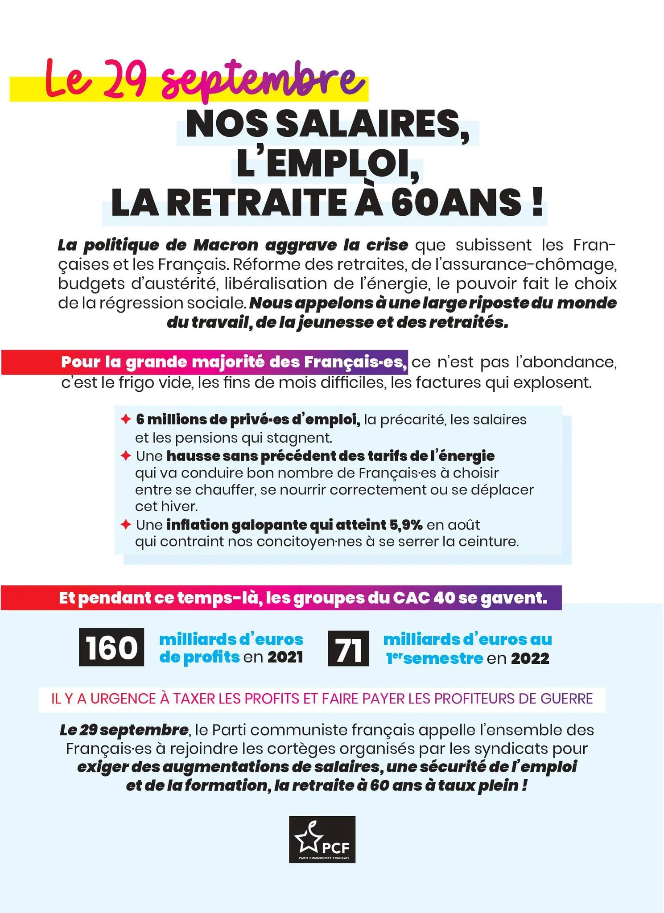

Appel de la fédération
Salaires, emplois et retraites. Notre appel au 29 septembre
Date indiquée par Facebook · 26 septembre 2022
Repères éditoriaux
Nous avons appelé à rejoindre la mobilisation du 29 septembre. Le compte rendu en images revient sur le rassemblement de Niort.
Texte conservé avec la publication
Jeudi 29 septembre, toutes et tous dans la lutte !
Les organisations syndicales appellent à faire du 29 septembre une grande journée de mobilisation des travailleuses et travailleurs, des privé.es d'emploi, des retraité.es, des précaires, bref de toute la population, pour porter haut et fort leurs revendications pour une vie meilleure et contre la politique de Macron et les mauvais coups qu'il prépare avec ses alliés de droite et de la finance !
C'est pourquoi, le Parti communiste français appelle l’ensemble des Deux-Sévrien.nes à rejoindre les cortèges organisés par les syndicats pour exiger des augmentations de salaires, une sécurité de l’emploi et de la formation, la retraite à 60 ans à taux plein !
Manifestations intersyndicales prévues dans le département des Deux-Sèvres :
Niort 11h place de la Brèche
Thouars 11h Place Flandres Dunkerque
Bressuire 14h devant la Sous Préfecture

Sources
Archive rouge · export Facebook · AR-0002-FB-01855
À lire aussi · À Niort, le 29 septembre, nous nous sommes mobilisés pour les salaires